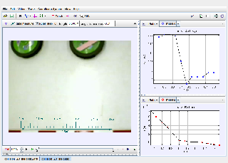

Tracker Experiment
This shows a collision between two air pucks. There is Velcro on the side of the pucks so they stick together.
Worksheet: a student worksheet is available at: https://physlets.org/tracker/library/innovative_tpt/html/collisions_2D_part1.html
Author: Anne J. Cox
Contact: Eckerd College, St. Petersburg, FL